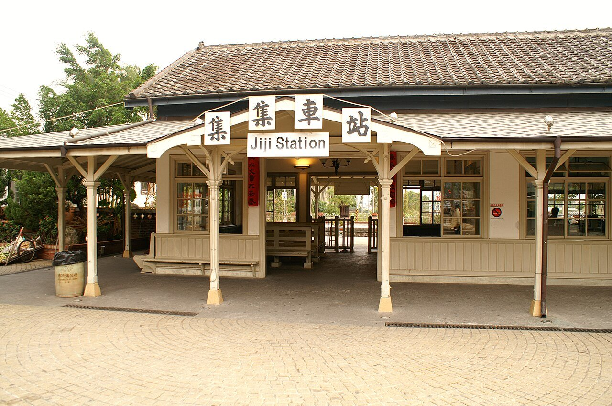

為什麼做這個展？
大家對稻米的認識，多半停在「吃」。至於米是怎麼種出來的、農場在想什麼，比較少人知道。
我們做了一份問卷（15 人回饋），大家最想知道鹿光米的品種、生產過程、營養資訊與品牌理念。
線上策展可以突破時間與空間，用數位方式推廣在地農業與永續理念。
請放上問卷結果的圖表（例如：多少比例的人沒聽過鹿光米、喜歡哪種展覽風格），並附上問卷題目。
寫給誰看？
潛在消費者與支持在地農業者
重視健康、良好消費，希望認識品牌故事與產品特色，進一步支持在地農產品。
地方文化與旅遊愛好者
對地方文化、農村生活與在地特色產品有興趣的人。

集集與鹿谷交界的濁水溪畔
鹿光米農場位在鹿谷鄉瑞田村，緊鄰濁水溪，是濁水溪沿線的重要糧倉。
我們把它放進「集集與鹿谷」的生活圈裡：一邊連著集集的鐵道人文，一邊連著鹿谷的山林茶鄉。
對應的永續發展目標（SDGs）
| 目標 | 內容 | 本展的連結 |
|---|---|---|
| 6 | 淨水與衛生 | 濁水溪源頭、山泉水灌溉，維護水源 |
| 12 | 責任消費與生產 | 支持友善耕作與在地產品 |
| 13 | 氣候行動 | 友善耕作、在地消費減少運輸 |
| 15 | 陸域生態 | 田埂留草、友善防鳥，保護生物多樣性 |
| 2.4（建議新增） | 永續糧食生產 | 友善耕作、產銷履歷 |
策展團隊
廖厚芳（組長）
首頁、關於本展、參考資料
2–3 句自我介紹
何如欣
01 品牌與人、06 健康區
2–3 句自我介紹
鄭安倫
02 和土地相處、04 日光曬穀
2–3 句自我介紹
武伯大
03 田邊鄰居、05 回到生活
2–3 句自我介紹
AI 使用聲明
本網站的版面與部分文字初稿由 GitHub Copilot 等 AI 工具協助產生，所有內容皆經組員查證、改寫與確認。AI 協作紀錄見 repo 中的 PROMPTS.md。